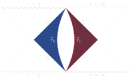
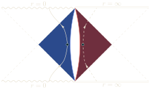
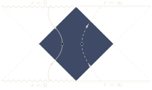
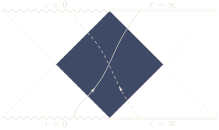

Energy from a black hole
In the Penrose process, an object falls into the ergosphere of a rotating black hole and splits in two. One piece follows an orbit of negative energy into the black hole, and the other escapes with more energy than the object brought in. The black hole loses mass and angular momentum, and the area theorem limits how much mass can be taken out. A charged black hole allows a similar process for charged particles, which lowers its charge along with its mass.
Mass as enthalpy
With a cosmological constant Λ, the mass of a black hole acts as an enthalpy, as Kastor, Ray and Traschen showed. Allowing Λ to vary adds a pressure-volume term to the first law,
δM = T δS + V δP ,P = −Λ/8πG ,
where V is the thermodynamic volume of the black hole. Since the area theorem requires δS ≥ 0, lowering the mass of a black hole at positive temperature requires lowering the pressure, i.e. raising Λ. It is natural to ask what physical process could change Λ near a black hole.
Membranes that change the couplings
If Λ comes from a 4-form field strength, membranes charged under it change Λ across them, as Brown and Teitelboim showed. In our work, which extends a construction of David Kastor for membranes that change Λ alone, the membranes also change Newton's constant G. In Lovelock gravity, the generalization of general relativity to higher dimensions whose field equations stay second order, they also change the gravitational couplings of the higher curvature terms. A ‘membrane ergosphere’ is a region outside a black hole in which such a membrane can have negative energy.
The question is then whether absorbing a membrane can lower the mass of the black hole in Planck units, M√G, while respecting the area theorem. Since the membrane also changes the couplings of gravity, the first law needs a work term conjugate to each coupling that changes, of the kind that Kastor, Ray and Traschen found for the couplings of Lovelock gravity.
The answer depends on how the two sides of the membrane are glued together. When G changes across the membrane, so does the local Planck length, ℓP = √G, the only physical length scale available. Gluing in the standard way, with the induced metric continuous across the membrane, makes absorption appear to violate the second law. Instead, the induced metric on each side is normalized by its local Planck length before continuity is imposed, which amounts to gluing in Planck units: observers on the two sides disagree on the length of a curve on the membrane, but agree on how many Planck lengths it spans. With this gluing, absorption changes the mass of the black hole not only by the energy of the membrane but also by a term proportional to the change in G, and this term removes the apparent violation.
Two ergospheres in de Sitter space
A black hole in de Sitter space has two horizons, the black hole horizon and, farther out, the de Sitter horizon. For these membranes one finds two ergospheres between them, one next to each horizon. Each is bounded by the radius at which a membrane at rest has zero energy, and since motion only raises the energy at a given radius, the two regions contain every radius at which a spherical membrane can have negative energy.
As the mass grows, the black hole horizon moves out and the de Sitter horizon moves in, and the two ergospheres widen toward each other. Above a mass set by the membrane's tension and charges, they merge, and a membrane can have negative energy anywhere between the horizons.
Where the membranes go
The Penrose diagrams follow these membranes. When the ergospheres are separate, a membrane with negative energy near the black hole emerges from the white hole horizon, turns, and falls into the black hole, while one near the de Sitter horizon enters across the past de Sitter horizon, turns, and leaves across the future one. Once the ergospheres merge, a membrane can also cross the whole region without turning, from the white hole horizon out to the future de Sitter horizon.




The same questions extend to Born-Infeld black holes.
Papers
- Enthalpy and the mechanics of AdS black holesarXiv:0904.2765
- Smarr formula and an extended first law for Lovelock gravityarXiv:1005.5053
- Neutralization of the cosmological constant by membrane creation